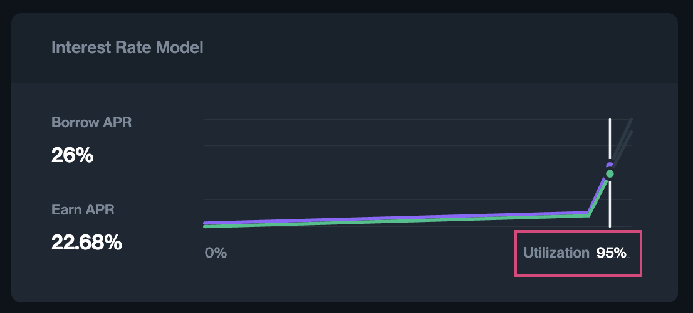
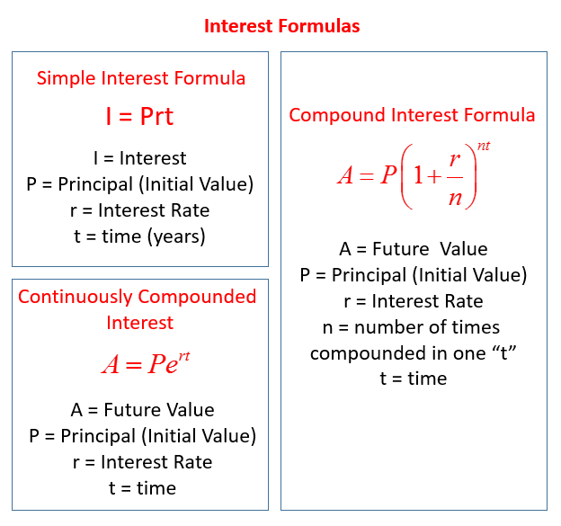

M0 Protocol Series Overview
The first $M stablecoins were minted on the Ethereum mainnet in early June 2024. Behind the scenes, this seemingly simple act for the first Minter was orchestrated through a sophisticated system of actors and entities coordinating on the immutable M0 Protocol. Today, we have several ecosystem actors (Minters, Collateral Storages, Validators, and Earners) that are united not only through clear economic incentives and compliance with the Adopted Guidance, but also through the fundamental mechanics of Solidity code and financial algorithms.
Although the logic and math behind modern DeFi protocols are often seen as complex and hard to grasp, our engineering team here at M0 would like to invite you to join us on this written journey on how we built our protocol from scratch, called the M0 Protocol Engineering Series. This first article in the series aims to break down the fundamentals of interest rate accruals and balances for the various actors within the M0 ecosystem.
The M0 engineering team has been fortunate to have the opportunity to innovate over the last year, for example, by introducing the first implementation of Pade approximation for continuous compounding in Solidity. However, as innovation typically goes, many concepts and implementations are built upon the past foundational work of others — we recognize that we stand on the shoulders of giants. Special credit goes to blue-chip DeFi 1.0 protocols like MakerDAO, Compound, and Maple, etc…, as well as battle-tested algorithms of traditional finance and the hundreds of years of development in financial markets that have shaped our thinking.
Minter Rate Accrual, Principal and Interest Rate Indices
Leveraging both established financial principles and innovative on-chain solutions, we have developed a unique approach to issuing and maintaining the $M stablecoin through our M0 Minters. M0 Minters issue the $M stablecoin against collateral verified by Validators. The system relies on off-chain collateral held in orphaned SPVs (Special Purpose Vehicles) and signatures generated by Validators to confirm the Minters’ collateral balances. While the collateral is managed off-chain, the accrual of interest on $M is controlled by fully transparent, on-chain algorithms.
For minting and holding $M, Minters must pay a Minter rate fee which accrues continuously to their $M balances. The Minter rate parameter and the logic of its calculation MinterRateModel smart contract are set via M0 TTG Governance.
As Minters hold $M, they continuously accrue interest on their outstanding $M balances which must be repaid to retrieve off-chain collateral. The value of this balance in the M0 Protocol is called activeOwedMOf. The value of activeOwedMOf increases over time, reflecting the accrued interest, which is automatically distributed between Earners and Distribution Vault (claimable by ZERO holders).
The first set of questions we will address in this article are: how do you precisely track the balance that Minters owe at any point in time, and how do you build a Solidity protocol that accurately and reliably charges interest for the minting of $M?
Let’s dig deeper into the code basics and how it can be built.
Step 1. Let’s assume for simplicity’s sake a Minter mints $100 M, with the Minter rate set at 5% APR. What will the balance of the Minter be at the end of the year?
The calculation here is straightforward: at the end of the year, the $M the Minter owes to the protocol will be 105 $M.
Total Owed M (minter) = Total Minted M (minter) × (1 + 0.05)Step 2. Let’s add some complexity to the scenario. In addition to initially minting $100 M, the Minter wants to mint an extra 1 $M every day and then repay the entire balance to the protocol at the end of the year. What is the simplest way to achieve this?
Intuitively, we understand that before each new mint, the Minter has to accrue interest to their previously owed $M balance. The interest rate scale has to be adjusted from annual to daily. With a daily interest rate of ~0.013%, the Minter’s balance becomes:
At the end of Day 1:
Minter Balance = 100 × (1 + 0.00013) + 1 newly minted M = 101.01At the end of Day 2:
Minter Balance = 101.01 × (1 + 0.00013) + 1 newly minted M = 102.02and so on…
Advanced readers are likely already considering simple and continuous compounding formulas, as well as compounding intervals, and they are correct in these assumptions.
Step 3. What if we don’t want to limit the Minter to predetermined minting intervals and compounding intervals are totally random? At any moment in time, M0 Protocol users should be able to query the Minters currently owed $M balance.
The logical approach would be to decrease the compounding frequency to the smallest possible unit, such as on a per-second basis. This involves adjusting the APY rate to a per-second rate and tracking the time since the Minter’s last interaction with the protocol, using a simple compounding formula:
Minter Owed M(t1) = Minter Owed M(t0) × (1 + rate_second)^secondsSinceLastAccrual,
secondsSinceLastAccrual = t1 - t0Or continuous compounding formula:
Minter Owed M(t1) = Minter Owed M(t0) × e^(rate_second × secondsSinceLastAccrual),
secondsSinceLastAccrual = t1 - t0The implementation we have provided here is correct, but not yet efficient, even for this primitive use case. Also, the reader might ask, where does the complexity come in, and when will the index and principal finally come into play?
Step 4. The last set of questions we have to answer now is how do we calculate the total owed $M across all Minters, and why is this important for the M0 Protocol?
Understanding the ‘why’ is often easier than understanding the ‘how.’ With DeFi protocols, total amounts are crucial, not just for providing transparency to users, but also for fundamental calculations like utilization rates and safety margins. For example, they are essential for adjusting Borrow and Supply rates in lending markets.

For the M0 Protocol, the total owed $M that accrues yield is an important metric used to calculate the safe EarnerRate to determine the yield that is distributed back to Earners.
The ‘how’ might seem straightforward: by looping through all Minters and calculating the sum of the total amount of owed $M for each, we can determine the total owed $M for all Minters:
Total Owed M (Minters) = Σ Total Owed M (Minter)This solution will definitely work for a few Minters and Earners in the system, but it becomes impractical for a heavily used protocol deployed on a popular blockchain like Ethereum. Gas-intensive looping to calculate these simple metrics can very quickly become too costly and infeasible in practice. But no worries, DeFi protocols have you covered — in other words:
“Necessity is the mother of invention”
Plato, a long time ago
Step 5. A Real Solution — Principles and Indices
We clearly need a solution to this issue. Complexity cannot be solved by adding more complexity, so it’s time to return to fundamentals. When examining the interest rate formulas below, a common element emerges across them. Can you identify it?

Hint: Regardless of the formula, it always boils down to the Principal × Multiplier which includes interest rate and time.
Given that the M0 Protocol charges the same interest rate for every Minter in the system, this multiplier can be replaced by a single, globally shared variable that reflects the accrual of rates across the system. We’ll refer to it as the system interest rate index, or simply the Index.
Intuitively, we can now derive the following formulas for the protocol:
Total Owed M = Total Principal × Index
Owed M (Minter1) = Principal (Minter1) × Index
Owed M (Minter2) = Principal (Minter2) × Index
Total Owed M = Owed M (Minter1) + Owed M (Minter2)
Total Principal = Principal (Minter1) + Principal (Minter2)For simplicity, let’s assume that the global index is calculated based on its previous value, the rate, and time, without delving into the specific formulas used to achieve this:
Index(t2) = fn(Index(t1), rate, t2 - t1), Index(t2) ≥ Index(t1)The index will always increase in value over time, reflecting the universal accrual of interest within the system. With this understanding, we are now prepared to address the fundamental question of this article: How can we track and store Minters’ balances internally? The answer lies in using both the principal and the global index.
Returning to the example where a Minter mints $100 M, the M0 Protocol will calculate the principal amount based on $100 M and the current value of the index:
Principal (Minter1, 100M) = 100 M / Index(current)And converting it back to the current balance of owed M:
Owed M (Minter1) = Principal (Minter1, 100M) × Index(current, t1)As time elapses, the global index will reflect the accrual of the rate in the system and Minter’s owed $M will automatically increase with the index’s growth:
Owed M (Minter1, 100M, t2) = Principal (Minter1, 100M, t2) × Index(t2),
where Index(t2) > Index(t1)The final question is how the Minter’s principal changes if additional $M is minted or existing $M is burned from their account to release collateral. In such cases, the protocol will need to adjust the existing Minter’s principal balance by adding or deducting the new delta of the principal.
- At t3 minting of an extra 10 $M will increase Minter’s principal and owed $M values:
Owed M (Minter1, t3) = (Principal (Minter1, 100M, t2) + Principal (Minter1, 10M, t3)) × Index(t3) - At t3 burning of 10 $M (repaying it to the Protocol) will decrease Minter’s principal and owed M values:
Owed M (Minter1, t3) = (Principal (Minter1, 100M, t2) - Principal (Minter1, 10M, t3)) × Index(t3)
In addition to tracking the principal amount for every Minter, the M0 Protocol also tracks the total principal for all Minters, referred to as totalPrincipal. It allows calculations of the total amount of Owed $M by all Minters. This will become relevant later when we discuss adjustments to the Earner rate based on total values.
Total Owed M = totalPrincipal × index, where totalPrincipal = Σ Principal (Minter i)Furthermore, the principal can be thought of as “owed $M at the t0 (time zero)” or “amount of $M that if minted at t0 would result in the present amount of owed $M”. Usually, t0 is the moment when the protocol is deployed, marking the start of the system interest rate accrual. At t0, the global index is equal to 1 × indexScale.
This concept of principal in DeFi was originally introduced by MakerDao and is named ‘art’ in MCD’s glossary.
Putting it all together:
To review concepts of principal and value at time zero in more detail, let’s look at the use case of a Minter who is minting equal amounts of 100 $M at t0 (time zero, deployment of protocol) and later on — at t1 and t2.
Usually indexScale is picked in the range of [1e12, 1e18], but for simplicity of calculations, let’s assume that indexScale = 1e4.
- At t0 Minter has issued 100 $M, Index = 1 × 1e4:
principal(0) = (amount × indexScale) / index(t0) = (100 $M × 1e4) / 1e4 = 100 M - At t1 the index has increased to 11000, the equivalent amount of minted $M at t0 to match 100 $M at t1 will be:
So 91 $M minted at t0 will equal 100 $M minted at t1 with index = 11000;principal(1) = (amount × indexScale) / index(t1) = (100 $M × 1e4) / 11000 ≈ 91 $M - At t2 the index is 12000, the equivalent amount of minted $M at t0 to match 100 $M at t2:
So 83 $M minted at t0 will equal 100 $M minted at t2 with index = 12000.principal(2) = (amount × indexScale) / index(t2) = (100 $M × 1e4) / 12000 ≈ 83 $M
And to reiterate the mechanism of interest accrual moving forward in time, let’s assume that at t3 index has reached 13000. At this point:
- 100 $M minted at t0 with an equivalent principal(0) of 100 $M will be equal
Owed M (Minter1, 100 $M, t0) = (principal(0) × index(t3)) / indexScale = (100 $M × 13000) / 1e4 ≈ 130 $M - 100 $M minted at t1 with an equivalent principal(1) of 91 $M will be equal
Owed M (Minter1, 100 $M, t1) = (principal(1) × index(t3)) / indexScale = (91 $M × 13000) / 1e4 ≈ 118 $M - 100 $M minted at t2 with an equivalent principal(2) of 83 $M will be equal
Owed M (Minter1, 100 $M, t2) = (principal(2) × index(t3)) / indexScale = (83 $M × 13000) / 1e4 ≈ 108 $M
And there you have it — the puzzle is complete and now the M0 Protocol can simply and precisely calculate the owed amount of $M per Minter as well as the overall system totals. One global index leads to an accurate and gas-efficient solution in Solidity code.
Next Articles
While many questions and concepts were addressed in this article, there is still much more to explore. We have only scratched the surface of the actual interest accrual within the index and the Solidity math behind it. In the next article, we will review index calculations in more detail, looking into the differences between linear and continuous compounding, and the approximations for continuous compounding with the Euler number in Solidity. Additionally, we will discuss when to store index updates and how the M0 Protocol handles changes in interest rates.
Future articles will also dive into more M0 Protocol-specific topics, such as the distribution of accrued interest to Earners, calculations of safe Earner rates based on total system amounts, and much more.
Stay tuned and see you next time.
References
To learn more about M0 Protocol and TTG governance:
- Whitepaper | M0 Documentation Portal. https://docs.m0.org/portal
- M0 Governance portal https://governance.m0.org/proposals/
For mechanics of principals and indices in DeFi protocols, I highly recommend the following articles:
- Rates Module | Maker Protocol Technical Docs. (n.d.). https://docs.makerdao.com/smart-contract-modules/rates-module
- Mcveigh, C. (2021, December 15). Math behind the magic — Defi Yield. https://ciaranmcveigh5.medium.com/math-behind-the-magic-defi-yield-c1db2f0d216c
- Naumov, K. (2022, June 10). Back to the basics: Compound, Aave. https://medium.com/@kinaumov/back-to-the-basics-compound-aave-436a1887ad94
- Gudgeon L., Werner S., Perez D., Knottenbelt W. (2020). DeFi protocols for loanable funds: Interest rates, liquidity and market efficiency. Proceedings of the 2nd ACM Conference on Advances in Financial Technologies, (pp. 92-112). 10.1145/3419614.3423254
About M0
M0 is the universal platform powering builders of application-specific stablecoins. With M0, developers can build safe, programmable and interoperable digital dollars.